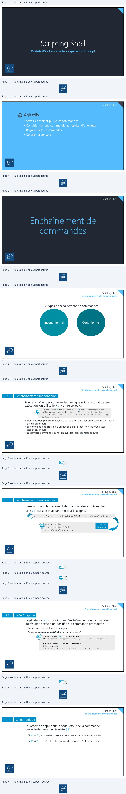
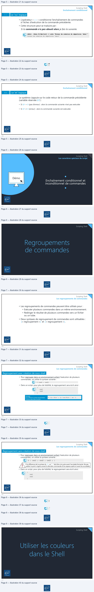
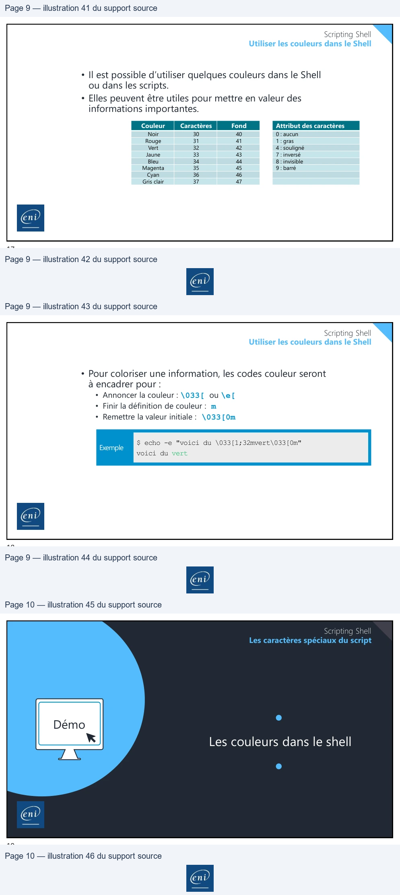

Transcription du document du Drive TSSR. La mise en forme est adaptée au Web ; les compléments IA du portail sont présentés séparément.
Module 05 – Les caractères spéciaux du script
1
Scripting Shell
Objectifs
• Savoir enchaîner plusieurs commandes
• Conditionner une commande au résultat d'une autre
• Regrouper les commandes
• Colorier la console
2
Scripting Shell
3
Scripting Shell
Enchaînement de commandes
2 types d’enchaînement de commandes
Inconditionnel
Conditionnel
4
A
Scripting Shell
Enchaînement inconditionnel
; L’enchaînement sans condition
Pour enchaîner des commandes quel que soit le résultat de leur exécution, on utilise le « ; » entre celles-ci.
$ mkdir /data ; touch /data/file1 ; cat /home/bonjour.txt mkdir: cannot create directory `./data': Permission denied touch: cannot touch `./data/file1': No such file or directory Bonjour le monde !
• Dans cet exemple, l’utilisateur n’a pas le droit de créer un répertoire à la racine
(mkdir en erreur).
• La commande de création d’un fichier dans le répertoire échoue aussi
(touch en erreur).
• La dernière commande (sans lien avec les précédentes) aboutit.
5
Scripting Shell
Enchaînement inconditionnel
; L’enchaînement sans condition
Dans un script, le traitement des commandes est séquentiel. Le « ; » est substitué par un retour à la ligne.
$ mkdir /data ; touch /data/file1 ; cat /home/bonjour.txt
Traitement
séquentiel
mkdir /data touch /data/file1 cat /home/bonjour.txt
6
Scripting Shell
Enchaînement inconditionnel
; L’enchaînement sans condition
Pour enchaîner des commandes quel que soit le résultat de leur
exécution, on utilise le « ; » entre celles-ci.
$ mkdir /data ; touch /data/file1 ; cat /home/bonjour.txt
mkdir: cannot create directory `./data': Permission denied
touch: cannot touch `./data/file1': No such file or directory
Bonjour le monde !
• Dans cet exemple, l’utilisateur n’a pas le droit de créer un répertoire à la racine
(mkdir en erreur).
• La commande de création d’un fichier dans le répertoire échoue aussi
(touch en erreur).
• La dernière commande (sans lien avec les précédentes) aboutit.
5
Scripting Shell
Enchaînement inconditionnel
; L’enchaînement sans condition
Dans un script, le traitement des commandes est séquentiel.
Le « ; » est substitué par un retour à la ligne.
$ mkdir /data ; touch /data/file1 ; cat /home/bonjour.txt
Traitementmkdirtouch /data/data/file1 séquentiel
cat /home/bonjour.txt
6Po
Pe
=
Scripting Shell
Enchaînement conditionnel
&& Le “et” logique
L’opérateur « && » conditionne l’enchaînement de commandes au résultat d’exécution positif de la commande précédente.
• Cette structure peut se traduire par :
Si la commande aboutit alors je fais la suivante.
$ mkdir /data && touch /data/file1 mkdir: cannot create directory `./data': Permission denied
$ mkdir ./data && touch ./data/file1 $ ls -l ./data/ -rw-r--r-- 1 Gilles Gilles 0 2021-12-26 02:12 file1
7
Scripting Shell
Enchaînement conditionnel
&& Le “et” logique
Le système s’appuie sur le code retour de la commande précédente (variable réservée $?) :
• Si $? = 0 (pas d’erreur) : alors la commande suivante est exécutée
• Si $? ≠ 0 (erreur) : alors la commande suivante n’est pas exécutée
8
[
[

Scripting Shell
Enchaînement conditionnel
|| Le “ou” logique
• L’opérateur « || » conditionne l’enchaînement de commandes à l’échec d’exécution de la commande précédente.
• Cette structure peut se traduire par :
Si la commande n’a pas abouti alors je fais la suivante.
mkdir ./data 2>/dev/null || echo "Erreur de création du répertoire 'data'" Erreur de création du répertoire 'data'
9
Scripting Shell
Enchaînement conditionnel
&& Le “et” logique
Le système s’appuie sur le code retour de la commande précédente (variable réservée $?) :
• Si $? = 0 (pas d’erreur) : alors la commande suivante n’est pas exécutée
• Si $? ≠ 0 (erreur) : alors la commande suivante est exécutée
10
pa|
ja|
Scripting Shell
Les caractères spéciaux du script
Démo
Enchaînement conditionnel et
inconditionnel de commandes
11
Scripting Shell
12
N
Scripting Shell
Les regroupements de commandes
• Les regroupements de commandes peuvent être utilisés pour :
• Exécuter plusieurs commandes dans un même environnement.
• Rediriger le résultat de plusieurs commandes vers un fichier
ou un tube.
• Deux syntaxes de regroupement de commandes sont utilisables :
(« regroupement ») et {« regroupement »}.
13
Scripting Shell
Les regroupements de commandes
Regroupement avec création de sous-shell
• Pour regrouper dans un environnement enfant l’exécution de plusieurs
commandes, on utilise la syntaxe suivante :
$ (cmd1 ; cmd2)
• Dans un script, pour plus de lisibilité, le regroupement sera écrit ainsi :
(
cmd1 cmd2 )
$ (ls /bin/ ; ls /usr/bin) | wc –l
Exemple :
pour afficherle nombretotal de fichiers
contenusdans /bin et /usr/bin
14
Scripting Shell
Les regroupements de commandes
Regroupement sans création de sous-shell
• Pour regrouper dans un environnement enfant l’exécution de plusieurs
commandes, on utilise la syntaxe suivante :
$ { cmd1 ; cmd2 ; cmd3 ; }
À la difference de la syntaxe du (), un “;” doit être mis juste avant l’accolade fermante. Ne pas oublier le point-virgule suivant la dernière commande et les espaces après et avant les accolades.
• Dans un script, pour plus de lisibilité, le regroupement sera écrit ainsi :
{
cmd1 cmd2 }
15
Scripting Shell
16
(ca)
iS)
(©)

Scripting Shell
Utiliser les couleurs dans le Shell
• Il est possible d’utiliser quelques couleurs dans le Shell
ou dans les scripts.
• Elles peuvent être utiles pour mettre en valeur des
informations importantes.
Attribut des caractères
0 : aucun
1 : gras
4 : souligné
7 : inversé
8 : invisible
9 : barré
Couleur
Caractères
Fond
Noir
30
40
Rouge
31
41
Vert
32
42
Jaune
33
43
Bleu
34
44
Magenta
35
45
Cyan
36
46
Gris clair
37
47
17
Scripting Shell
Utiliser les couleurs dans le Shell
• Pour coloriser une information, les codes couleur seront
à encadrer pour :
• Annoncer la couleur : \033[ ou \e[ • Finir la définition de couleur : m • Remettre la valeur initiale : \033[0m
Exemple $ echo -e "voici du \033[1;32mvert\033[0m" voici du vert
18
EE CE
Scripting Shell
Les caractères spéciaux du script
Démo
Les couleurs dans le shell
19
7
|
©
eni
